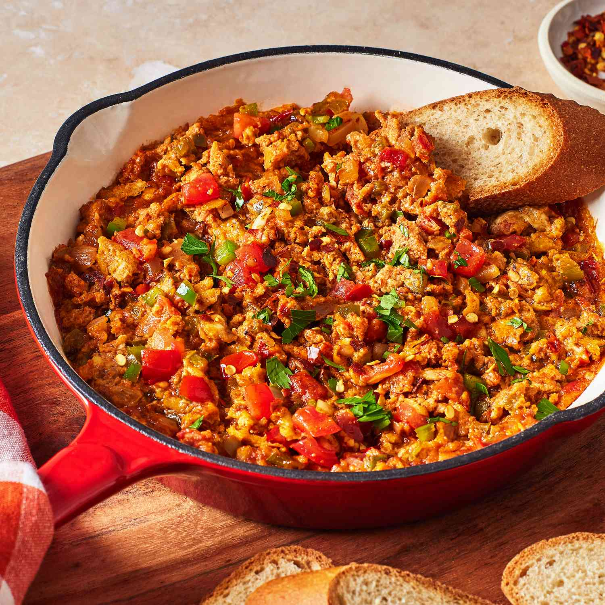

Menemen is a traditional Turkish spread consisting of tomatoes, eggs, peppers, and various spices. There are many version of menemen, so it can also contain garlic, cheese, spinach, sausage pieces, or onions (when menemen is served as a main dish).
Meal prep time : minutes
Servings : 1